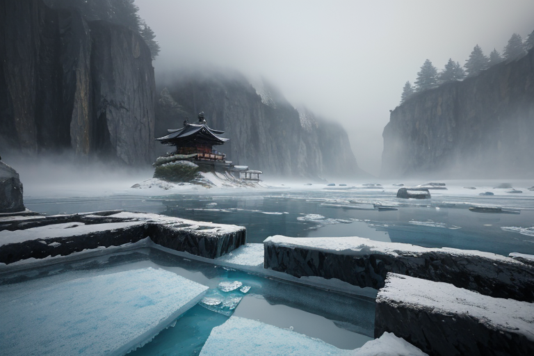
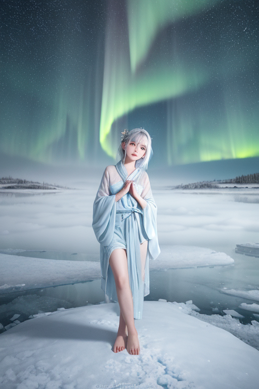
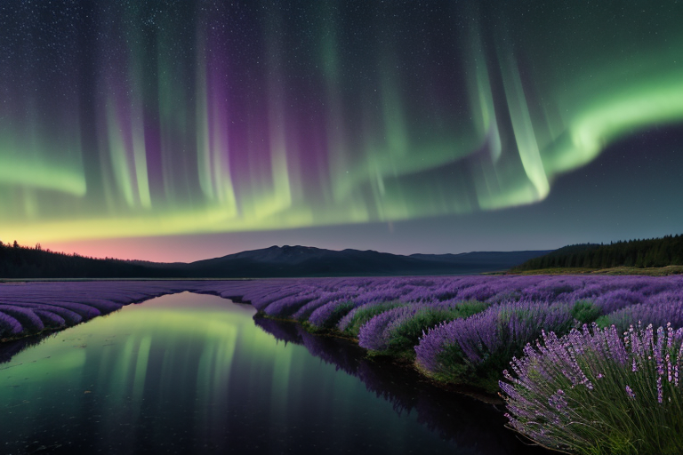
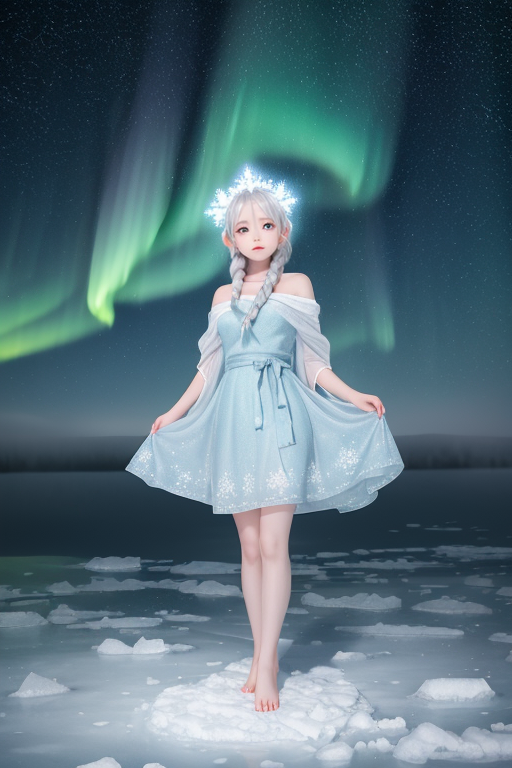
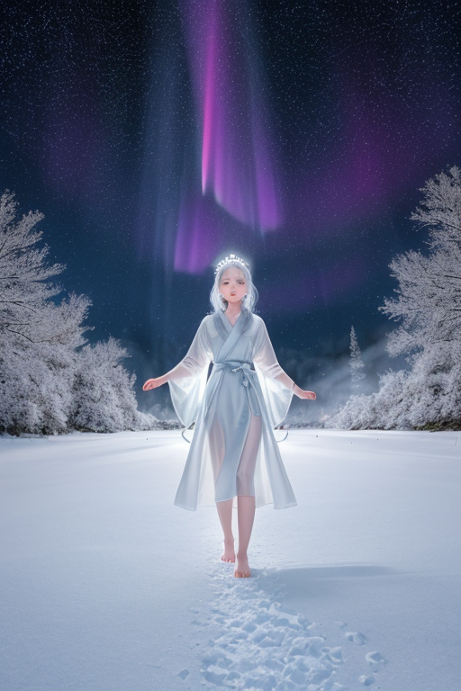

第一章 現実の北海道
あなたはまだ気づいていない。この土地にも、王がいることを。
摩周湖の霧が、深い青の水面を覆う朝。訪れる者は、その絶対的な静寂と、目に見えるものすべてを飲み込むような広さに、言葉を失う。ここには神社も仏閣もない。あるのは、霧と水と、周囲を囲む断崖だけだ。この土地の空気は、祈りというより、存在そのものの重みで満ちている。
その静寂の中心に、一人の男が立っていた。ノルディア・エルム。孤広王だ。彼は長い睫毛に霧の粒を宿し、湖面よりも深いアイスブルーの瞳で、地脈の「歪み」を見つめている。北海道という大地は、あまりに広い。その広さは、時に人を孤独に押し潰し、時に地殻の圧力を一点に集中させる。五稜郭の戦いの悲鳴も、開拓者の絶望も、すべてこの大地が飲み込み、沈黙の層の下に封じ込めてきた。
彼は何も言わない。ただ、掌をかすかに湖面に向ける。傍らに佇む氷の精霊、フロストリンが、地中に張り巡らされたストレスの網の、ほんの一部を、隣の谷へと分散させる。大きな地震は防げない。ただ、その衝撃が一点に集中することを、この広さを使って和らげるのだ。
「広さに耐えられるか？」
王の心に、いつもの問いが去来する。それは、この土地に生きるすべての者への、静かな問いかけでもあった。

第二章 歪みの兆候
摩周湖の霧は、いつもより濃く、冷たかった。湖を望む展望台に立つ一人の老婦人が、目を閉じて静かに手を合わせている。彼女の祈りは、家族の無事や豊漁ではない。ただ、「この静けさが続きますように」という、形のない願い。その祈りが、王の星から授けられた感覚器に、微かな波紋として届く。
ノルディア・エルムは、白樺林の影からその様子を眺めていた。老婦人の祈りは、この土地に特有の、広さゆえの「孤独への畏れ」が色濃く滲んでいた。それは、地脈の歪みが増大する前触れでもある。人々の心の揺らぎが、目に見えぬストレスとして大地に伝播し始めていた。
「歪みは、人の心からも生まれる」
王はそう悟っていた。五稜郭の戦いで流された無念も、開拓の苦難も、すべてはこの大地に記憶され、蓄積されていく。フロストリンが地中を駆け巡り、オーロリアが空で淡く光る。彼らは、増幅する孤独感という“心の歪み”が、物理的な歪みに共振しないよう、緩衝材として働く。
王は問う。あなたは、この果てしない広さと、そこで膨らむ孤独に、耐えられるか？ 答えは要らない。ただ、問いを抱きながら、彼は微調整を続ける。

第三章 沈黙の対峙
摩周湖の霧は、世界を無音に包む。王は岸辺に立ち、鏡のような水面を見下ろす。ここには、広さの極致がある。空も湖も、すべてが果てしなく、自分という存在を無に帰すかのようだ。彼は本来、この問いを発する側だった。あなたは、広さに耐えられるか？ と。
しかし今、彼自身が問われている。感情進化は、彼に「孤独」という感覚を植え付けた。それは、かつては単なる観測データでしかなかった。富良野のラベンダー畑が風に揺れる広大な紫色も、小樽運河に沈む夕陽の静けさも、すべては調整すべき風景の一部だった。今、彼はその美しさに、切なさを覚える。守るべきものの重みを、初めて「重い」と感じる。
フロストリンがそばに寄り、微かに冷気を放つ。オーロリアの光が、頭上でゆらめく。彼らは何も語らない。この王の内面の揺らぎを、彼らは知っている。知っていて、ただ傍にいる。王は目を閉じる。地脈の鼓動を感じる。増幅するのは、人間たちの孤独だけではない。この大地そのものが、その広さゆえに抱える「静寂の重圧」がある。彼は、その両方を背負い、微調整し続けなければならない。耐えるとは、そういうことか。答えは出ない。霧が、すべてを優しく、そして残酷に覆い隠す。

第四章 妖精との対話
摩周湖の霧は、王の問いを飲み込んだまま、深い青を閉ざしている。フロストリンが、ごく僅かに氷の軋む音を立てた。それは言葉の代わりだった。
「耐える、とは違う」
オーロリアの光が、ゆっくりと波打つ。彼女の声は、風のささやきのように聞こえた。
「広さは、器です。あなたが感じるこの静寂の重圧は、この土地が、すべての魂の叫びを逃さず受け止めている証。私たちは、その受け止められたものを溢れさせないよう、調整するだけ。祈りとは、その受け止められたものの重さを、少しだけ軽く整える呼吸です」
王は、手のひらをかすかに震える大地に向けた。人間の孤独。大地の重圧。それらは確かにここにある。しかし、妖精たちは言う。それは破綻ではなく、この土地の在り方そのものだと。
「あなたは背負う必要はありません」フロストリンの冷たい手が、王の肩に触れる。「あなたは、ただここに在り続ければいい。在り続けることが、すでに調整なのですから」
王は、深く息を吸った。冷たい空気が、広大な器であるこの大地の、ほんの一部となって肺に満ちた。

第五章 微調整と余韻
摩周湖の霧は、訪れる者の心のざわめきを静かに吸い取る。王はその岸辺に立ち、目を閉じた。彼の役割は、物理的な歪みだけでなく、この広大さゆえに生じる人々の心の「歪み」、孤独や疎外感という精神波を微調整することでもあった。富良野のラベンダー畑を包む静寂、小樽運河に沈む夕陽の余韻、旭山動物園で生き物と向き合う無言の時間。彼はそれらに、ほんの少しの「間」と「手触り」を添える。
五稜郭の戦いから続く、開拓と抵抗の歴史。その重みは消せない。彼はそれを、雪原のように潔く、白樺のようにしなやかに受け止めるだけだ。フロストリンは地脈の圧を分散させ、オーロリアは夜空に優しい光を灯す。言葉はない。必要なのは、この広さそのものと在り続けることだけだ。
やがて、彼は自問に戻る。あなたは、広さに耐えられるか？答えは出ない。ただ、耐えるのではなく、広さと共に呼吸することを、彼は学びつつあった。孤独は、時に深い優しさの源となる。
あなたの町にも、王がいる。